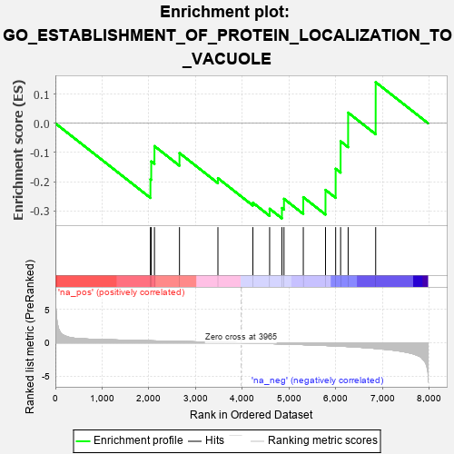

| | | Dataset | 7d |
| Phenotype | NoPhenotypeAvailable |
| Upregulated in class | na_neg |
| GeneSet | GO_ESTABLISHMENT_OF_PROTEIN_LOCALIZATION_TO_VACUOLE |
| Enrichment Score (ES) | -0.32566002 |
| Normalized Enrichment Score (NES) | -0.7804448 |
| Nominal p-value | 0.73756903 |
| FDR q-value | 0.9962775 |
| FWER p-Value | 1.0 |
Table: GSEA Results Summary

Fig 1: Enrichment plot: GO_ESTABLISHMENT_OF_PROTEIN_LOCALIZATION_TO_VACUOLE
Profile of the Running ES Score & Positions of GeneSet Members on the Rank Ordered List
| PROBE | GENE SYMBOL | GENE_TITLE | RANK IN GENE LIST | RANK METRIC SCORE | RUNNING ES | CORE ENRICHMENT | | 1 | VPS25 | | | 2033 | 0.300 | -0.1918 | No |
| 2 | GOSR2 | | | 2050 | 0.298 | -0.1306 | No |
| 3 | SNF8 | | | 2119 | 0.288 | -0.0781 | No |
| 4 | VPS4A | | | 2654 | 0.205 | -0.1018 | No |
| 5 | HGS | | | 3476 | 0.080 | -0.1879 | No |
| 6 | VTI1A | | | 4224 | -0.046 | -0.2721 | No |
| 7 | VPS28 | | | 4582 | -0.114 | -0.2927 | Yes |
| 8 | VPS36 | | | 4845 | -0.167 | -0.2902 | Yes |
| 9 | CLU | | | 4889 | -0.174 | -0.2586 | Yes |
| 10 | RAB7A | | | 5302 | -0.271 | -0.2530 | Yes |
| 11 | VAMP7 | | | 5777 | -0.399 | -0.2282 | Yes |
| 12 | GCC2 | | | 5994 | -0.470 | -0.1557 | Yes |
| 13 | AP3M1 | | | 6100 | -0.506 | -0.0616 | Yes |
| 14 | AP3D1 | | | 6261 | -0.558 | 0.0365 | Yes |
| 15 | VPS41 | | | 6850 | -0.841 | 0.1409 | Yes |
Table: GSEA details [plain text format]
Fig 2: GO_ESTABLISHMENT_OF_PROTEIN_LOCALIZATION_TO_VACUOLE: Random ES distribution
Gene set null distribution of ES for GO_ESTABLISHMENT_OF_PROTEIN_LOCALIZATION_TO_VACUOLE